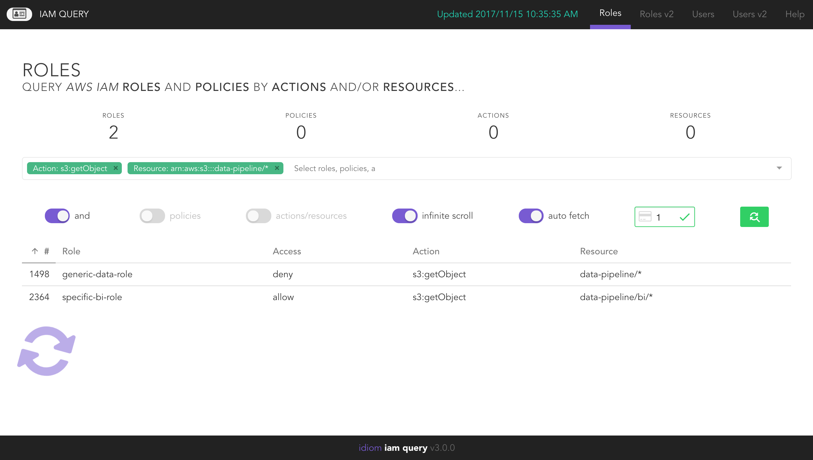
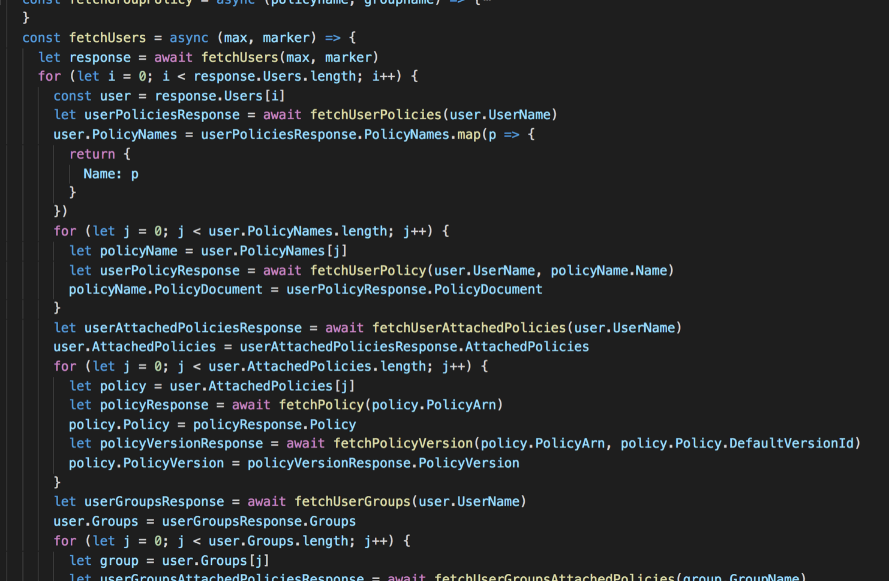

Use Case
As a data engineer, I should be able to choose an s3 action and resource, so that I can see which roles and associated policies I need for my ETL process.

Architecture
Challenges
AWS IAM Roles, Policies, Groups, and Users can have complex relationships, specifically when each of those entities can have their own set of managed or attached overriding rules. To build these relationships, the RESTful API layer had to consume over a dozen of the IAM endpoints, and join the information together. Since the information was inherently document oriented, there was a linear path from endpoint to endpoint to build the model, and so using ESNext features like async and await keywords was essential to handle the promise based strategy used in the application.

Skills and Competencies
- Firm understanding of IAM API and AWS SDK
- Firm understanding of RESTful API design and consumption
- Use functional programming paradigm and ES6 for promise based asynchronous http requests/responses in NodeJS back-end, and VueJS front-end
- Use in-memory SQL DB
- Lead the path for development
- Save team time (which equals money)